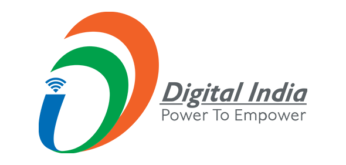
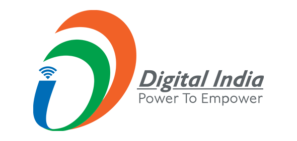

Notice - List of candidates provisionally shortlisted/ not-shortlisted for the Group 'A' posts and Group 'B' (Deputation) posts notified vide Advt. No. 05/2024 dt.29.11.2024
📅 2025-02-03
Read More
Pattern of Examination and Indicative Syllabus for the Group 'B' & 'C' posts notified on Direct Recruitment basis against Advt. No. 05/2024 dated 29.11.2024
📅 2025-01-21
Book Fair - 2025 (30-31 Jan 2025)
📅 2025-01-30


 
